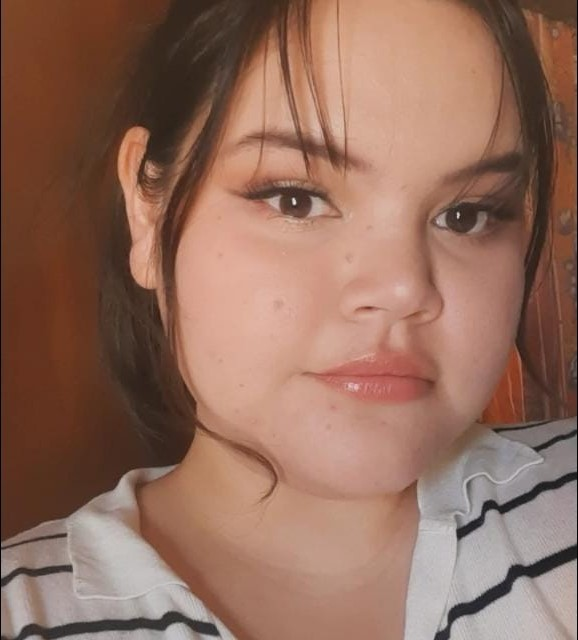
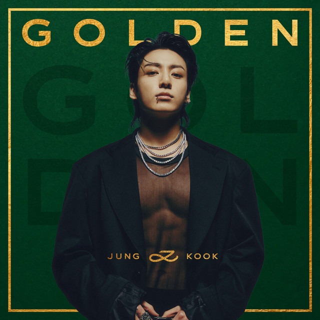
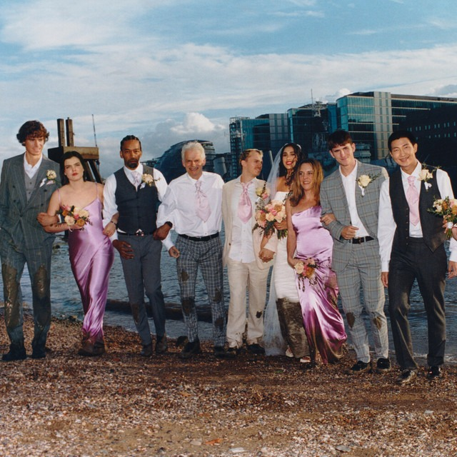
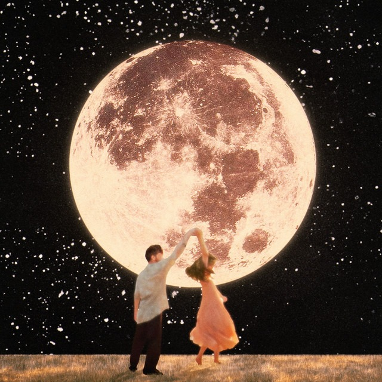
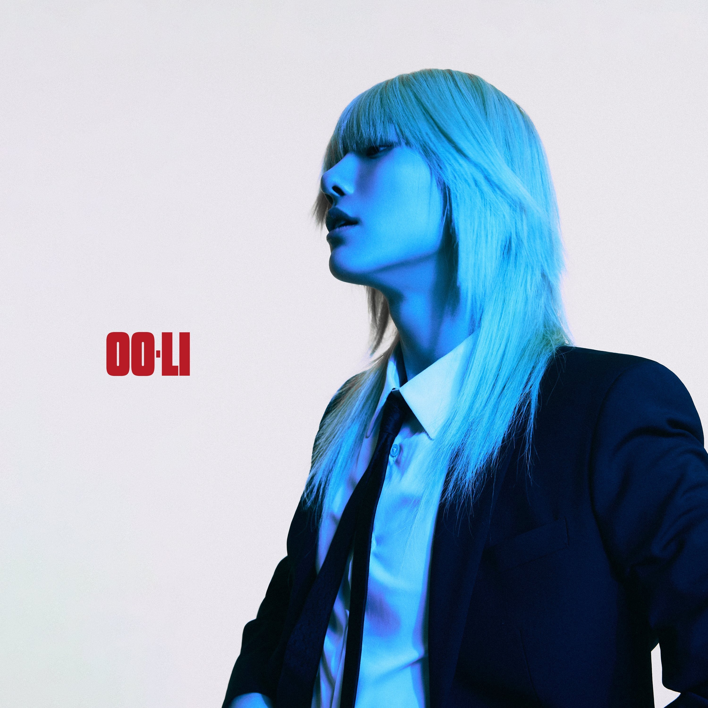
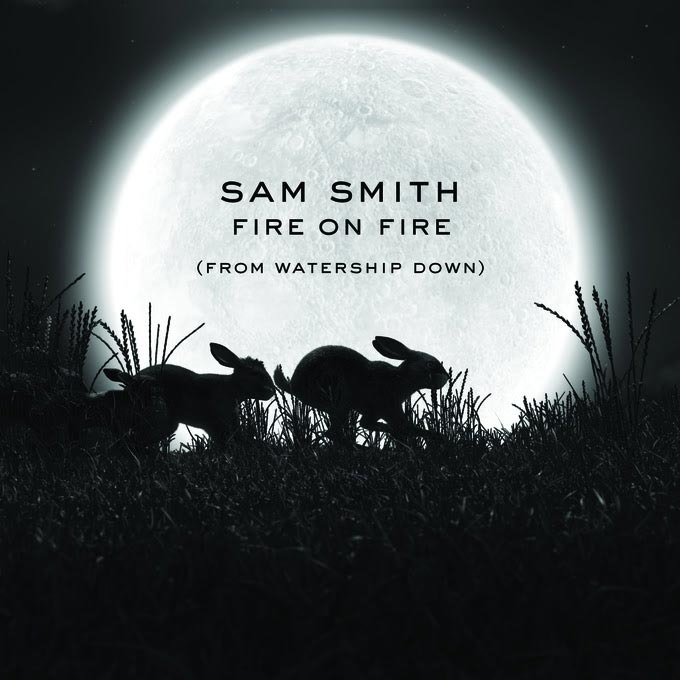

Soy Perla Beatriz Lopez Armenta una mujer nacida el día 8 de junio del año 2002, Nací en un pueblo de Guasave llamado León Fonseca en el estado de Sinaloa, en una familia conformada por mi padre Antonio Lopez, mi madre Julia Beatriz y 4 hermanas. En ese pueblo curse Kinder, Primaria, Secundaria y Preparatoria; a la edad de 18 años entré a la Universidad Autonoma de Occidente en Guasave, donde cursé la carrera de Lic. En Sistemas Computacionales, de la cual egresé en el año 2024. Actualmente en el año 2025 me encuentro llevando a cabo un bootcamp de Java Script Full Stack Jr.




